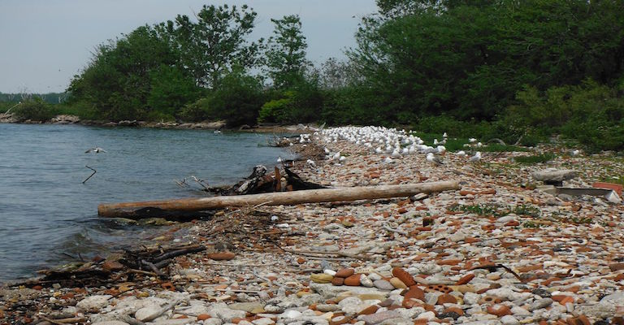

Tell-a-Tale Trail is inspired by [murmur], A toronto-based project where signs of an ear with a number to call are posted all over Toronto neighborhoods with the audio files available. These files that users can call or access online are people's stories from those specific locations and acts as an immersive narrative for users to exeperience as they explore that location the narrator is discussing from another time.
My app, Tell-A-Tale Trail, is a project that acts as a sort of update and refurbishing of [murmur]. Since most people use smartphones and data, users can use geolocation with this app and based on their location, can access stories (from myself so far), and listen to it as a podcast episode while gallavanting the streets of Toronto or looking to find more about the neighborhood.
The next steps for this project is tracking a range of values as opposed to an exact location, since accuracy of longitude and latitudes of locations can be finnicky. Furthermore, my future goals for this project is getting more people to upload their own recordings when they access the geolocation on this app.
How it Works
My web app functions with two main components: geolocation and audio. Currently, due to server space, I have few pre-determined coordinates and audio files. The script calls for one audio (which is sorted according to location under the "audio id" tags) when it detects a match between the location the user has and the array of coordinates listed. The longitudes and latitudes of these specific locations, which are rounded down to the hundreth decimal. Basically, when there is a match on the user's coordinates with one in the array, a specific audio file listed in that array will start playing.
Challenges
My overall challenge with this app was connecting geolocation with audio. While I understood how to implement audio in html, I have never implemented audio in this version on javascript, or using html and javascript simultaneously. I also had an initial challenge with the coordinates and rounding them since geolocation gives numerous decimals when determining your location. One that I cannot figure out currently is how to pause the audio. For now, it plays continuously, even when navigating to other pages. I attempted to pause this using a blank canvas from test 11 but I couldn't find an appropriate way to implement a function to pause the music when the user clicked the canvas on the "Find a Tale" page.
Eclectic neighborhood bordering University of Toronto's St. George Campus. To myself? sushi, cheap breakfast + unlimited coffee, bars that don't card.
College Park
North of Yonge/Dundas, host to many Ryerson students, some UofT students and smack inbetween the Eaton Centre and Yorkville. For myself: my apartment, Bulk Barn, and the best yet most crowded bar in this section of the city.
Kensington Market
Hipster, diverse, great eateries, cafes, and art culture. For myself: a little haven in the city filled with a good chunk of drunk nights, cosy café outings and the best tacos I've ever devoured.

Leslie Street Spit
Also known as Tommy Thompson Park. Open on weekends and weekdays after 6 pm. A desolate dumpsite with a bike path, birds, and hidden treasure. Myself? Great escape from everything else in Toronto.
Richmond West (West of University)
Clubs, bars, startups and various other companies reside in the Entertainment District. For myself: my main building at OCAD University, oddly enough.